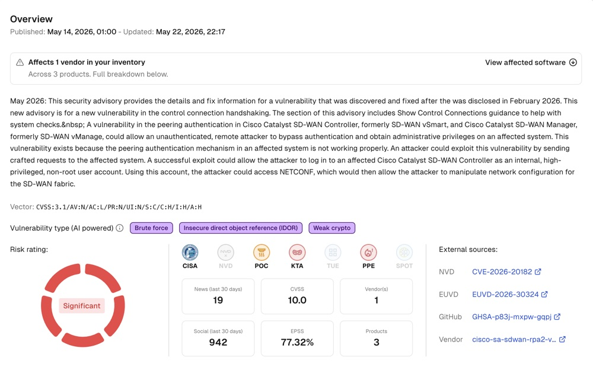

The early warning layer for vulnerability management and threat intelligence
Cytidel sees the threats that matter before your scanner, before CISA KEV, and before the news cycle. Five capabilities working together to give your team the speed, the coverage, and the context to act.
Five capabilities work together to make Cytidel the early warning layer:
Each runs on real-time intelligence from thousands of sources. None of them works as a standalone feed. Together, they give your team the speed, the coverage, and the context to act before the rest of the industry catches up.
Real-time vulnerability intelligence
Every vulnerability, tagged and rated by what's actually happening.
A threat-led approach where prioritisation is driven by evidence, not theory.
- Exploitation evidence — is this being used right now, in the wild? Real-time confirmation from thousands of sources.
- Potential Public Exploit — exploit code publications identified before official sources like CISA KEV catch up.
- Dynamic Risk Rating — ratings shift from Low to High Risk within hours as new exploit signals emerge.

Threat Actor Intelligence
Know who's targeting your world, before they get to you.
Map known adversaries to the vulnerabilities in their arsenal with full TTP context, alias tracking, and campaign history.
Go deeper into malware used, intent (ransomware vs espionage), and tactical patterns over time. The full module is called Villain Vault.
Access Villain VaultSupplier & Software Monitoring
Early warning across the parts of your stack your scanner can't see.
The moment a vendor advisory drops, a breach is detected, or a threat actor starts targeting software your team depends on — the right people are alerted instantly.
Bulk Analyser
Apply the intelligence to your scanner backlog.
Upload your scanner backlog. Cytidel enriches every vulnerability with real-world risk ratings and evidence trails — in minutes, not weeks.
Works with output from Tenable, Qualys, Rapid7, and other scanners. Save reports, track risk profile changes over time, and bring evidence to your next remediation conversation.
Smart Alerts
Early warning, routed to the people who can act on it.
Configure by vendor, product, and risk threshold. Route alerts to the people who own the technology, not everyone.
Channels: email · webhook · Slack · Teams
How it fits your stack
Cytidel works alongside the tools your team already uses. No agents to deploy. No infrastructure changes. No data ingestion.
- Scanners
- Tenable, Qualys, Rapid7, and other scanner output flows through Bulk Analyser for enrichment.
- Alerting
- Email, webhook, Slack, and Teams. Direct integration into your operational environment.
- Workflow
- API access for SIEM, SOAR, or ticketing systems for enterprise customers.
- Deployment
- SaaS platform, ISO 27001:2022 certified, hosted in the EU. Ready within a day.
Ready to see Cytidel?
Meet with a Cytidel expert to discuss how you can get ahead of emerging threats, understand the latest threat actor activity relevant to your business, and monitor critical software and suppliers 24/7.
Book a Demo